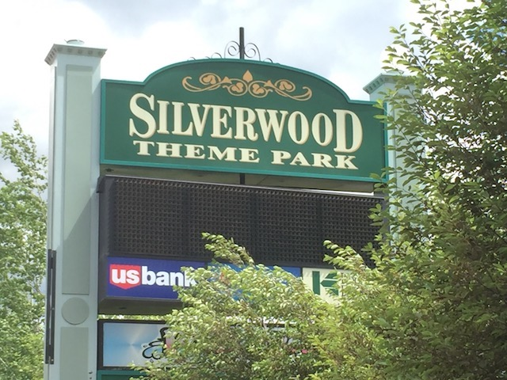
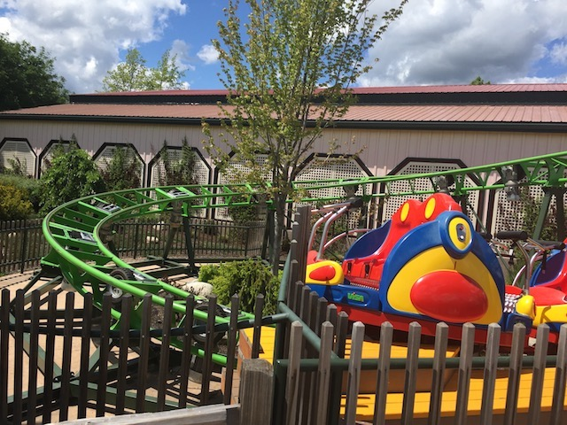
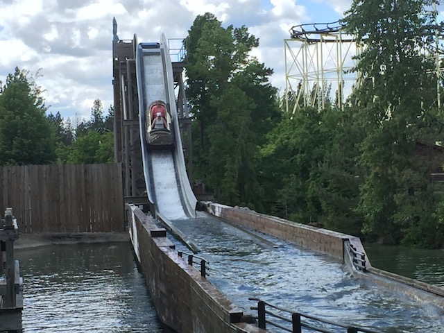
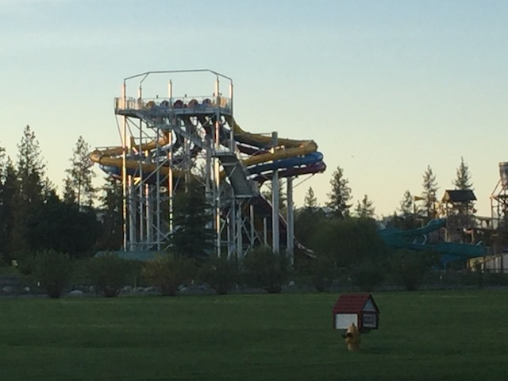
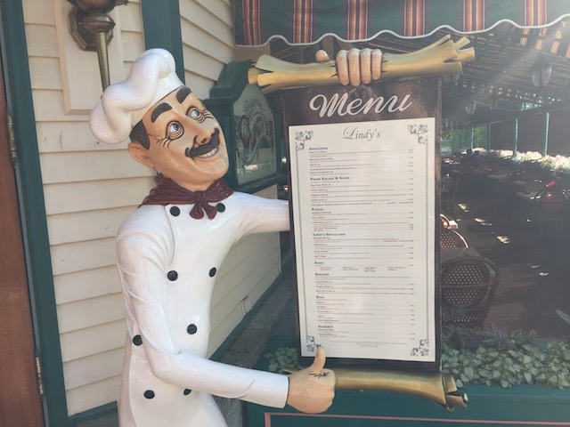

| |
Silverwood Review

Silverwood is definetly one of the most isolated amusement parks in the country and it's certainly an interesting park. It seems very much like a typical amusement park. It really reminds me of some of the oldest amusment parks in the country, like Kennywood and Lake Compounce. It gives off a very similar vibe as these parks. Yeah, there's a big difference as Silverwood came into existance in the late 1980s and is only 4 years older than I am. But the atmosphere they have is incredibly similar to those parks that are 100 years older. It has a really good coaster collection, a great flat ride collection, mixing old classic flat rides with new state of the art rides, and it has a nice atmosphere. Yeah, it's fairly rural, just out in the countryside, but I like it. Silverwood is a park that does not need to go above and beyond, as there really is no competition for Silverwood. It is the only amusement park in Idaho, and the closest other park is 5 hours away, and while I haven't been there, I don't have super high expectations. But Silverwood still really puts out a really good coaster collection. Their wooden coasters are really good, and some of the better ones without a doubt, and they do have a really good modern steel coaster with Aftershock. Yeah, there are clones out there. But not a ton, and those Giant Inverted Boomerangs are really freaking good. And they're getting an RMC Raptor. Those are always fun. And much more that we'll go over throughout this review.
Rollercoasters
There is a link to a review of all the Rollercoasters at Silverwood.
Please keep in mind that there is no review of Stunt Pilot because it didn't exist when I last visited.
Top Coasters
Aftershock Review

Very Fun Coasters
Timber Terror Review

Tremors Review

Decent Coasters
Corkscrew Review

Kiddy Coasters
Krazy Koaster Review

Flat Rides
All right. Here are all of the flat rides that are found at Silverwood. All right. Let's start out with the star flat ride and by far, the most interesting flat ride in the park. Spin Cycle. This is a Maxi Dance Party 360. This is basically a frisbee, mixed in with those Spin Out carnival ride. And it's really freaking good. The one thing that the ride lacks, is that it sucks as a frisbee. I know it looks like a frisbee, but there is no swing to this ride. But with that said, it's still a really great ride. And there's a ton of flipping and spinning on the ride. It's something that'll really make you dizzy, just flipping high up in the air. It's totally one of the better flat rides, and I hope that these things catch on. The other flat ride that is worth really discussing would be their drop tower. Panic Plunge. This would be a Shock Drop. So you have no idea when you're going to drop. You just start climbing up. Going up, up, up, DROP!!! So it really catches you by surprise. They're really fun rides, and I'm very happy one is at Silverwood. OK. These two are the two flat rides that are really worth talking about. I mean, they're in Roller Coaster Ally along with all the major roller coasters, despite not being roller coasters. There still are a handful of flat rides I did at Silverwood. I did their Tilt a Whirl, which may very well be the fastest tilt a whirl ever. Seriously, this thing spun like crazy! Their paratrooper is fun, and I particuarly like that it's right over the bumper boats. Sure, it's not as cool as the setting at Indiana Beach, but it's still cool. And there's the scrambler. It's a scrambler. They're fun. But nothing special. They also have a round up, some bumper cars, a ferris wheel, and a carousel.
 Seriously. This is awesome! Love the spinning and flipping.
Seriously. This is awesome! Love the spinning and flipping.
Water Rides
Silverwood has a couple of water rides. And...they're nothing special. But fun. Their log ride is nothing special. It just floats around, and ends with a small drop. Eh. Yeah, it's fun. But it's...one of the lamer log flume. Interstingly enough, this is actually a relocated ride. It was originally from Kentucky Kingdom, and Silverwood bought the log flume from the period where they thought it was gone forever before it was reborn. Intersting, but nothing about the log flume was worth saving. Oh well. There also is a rapids ride, and I never checked it out due to the weather being too chilly for a freaking rapids ride. Plus, I wasn't impressed with their log flume. But hey. I'm sure that it's a fun ride. And that it gets you wet. I mean, that is the main reason we never bothered to check it out.

Hey you! Scrappy little log flume from Kentucky! Have a second chance!
Water Park
And then there's their water park. Boulder Beach. I never went to it, but what I saw, it does look cool. The slides don't seem like anything too extrordinary or special. I know they just recently got some trap door slides. Yeah, those are becoming mmuch more common, but they're still a lot of fun. It definetly looks like its worth a stop sometime.

Trapdoor Spiral slides are always fun.
Dining
Silverwood has a fairly good dining selection. Let's mainly talk about their sit down resteraunt. Lindy's. Now the menu at this resteraunt isn't anything too amazing or spectacular. It's mainly just standard theme park food. Burgers. Pizza. Hot Dogs. But they do have a couple other things on the menu. They have Pulled Pork, I'm happy to see that there. I also remember them having orange chicken. I'm pretty sure that would've been good. I always enjoy it when amusement parks have sit down resteraunts, and this was a good one. From what I've seen, the rest of the food in the park is essentially, everything they have in Lindys, just not as a sit down resteraunt. Pizza. Burgers. BBQ Pulled Pork. Yeah. All that's there. The only thing I see that I don't remember seeing at Lindys would be Mexican food. Now, I'm spoiled by good Mexican food all around me. So I doubt this would be anything to blow me away. But for Idaho, it's probably really good.

Hey. Full service resteraunts in theme parks are good. =)
Theming and Other Attractions
Here are the reviews of all the other stuff at Silverwood. As far as theming goes, there's pretty much none. Honestly, the only theming I can think of is for the Tremors station. They sort of make it look like it was hit by a major earthquake. But aside from that, nothing. All the rides are pretty much just plopped down. It's an amusement park through and through. OK. So there's no theming at all at Silverwood. What else is there to do? Well, not a ton. It's pretty much just the typical amusement park activities. There are a lot of arcade games for you to play, and several midway games for you to play and get your money. Nothing too extreme or out of the ordinary, but oh well.
In Conclusion
Silverwood is a really fun amusement park. Sure, there are several amusement parks out there. But not only is Silverwood a relatively new park, but it's a very isolated park. There is not any competition in the area. The nearest park is 5 hours away, and it's another small little park. But Silverwood really does have a lot going for it. It has a really good coaster collection with some really good wooden coasters. They may not be Top 10 Wooden Coasters, but they still are some of the better woodies without a doubt. And on top of that, they've saved a lot of really good coasters. They not only got DejaVu from Six Flags Great America, but they also rescued Corkscrew from Knotts Berry Farm, the first coaster to go upsidedown (that wasn't a death trap from the beginning of the 20th Century). And on top of all that, they have a good mix of flat rides, with both old classic flat rides, as well as new state of the art flat rides. They have some fun water rides, and a fun water park connected. It works as a fantastic local park, and if you're from the area, there's not much competition, and you'll love it. If you're a coaster enthusiast, and from the area, it's a bit of a ways, and far from the best park. But they do have some underrated coasters and some historic rides to check out.
Enthusiast FAQs.
*Are there kiddy coaster restrictions? - There's no requirement to ride Krazy Koaster. I know they have a kiddy powered coaster that might have a restriction. But that's not a credit, so I didn't bother to check.

Tips
*Get plenty of rides on Aftershock, Timber Terror, Tremors, Stunt Pilot.
*Check the wind in the morning. Aftershock closes in the wind.
*Have Fun!!
Theme Park Category:
Amusement Park
Location
Athol, Idaho, USA
Last Day Visited
June 2, 2017
Video
I didn't shoot enough video for a Silverwood video. I'll have to go back to shoot more.
Complete Update List
2017
Silverwood/Lagoon Road Trip
Here's a link to the parks website.
Home
|